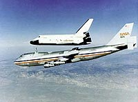
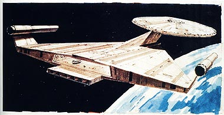
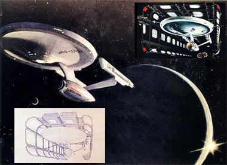
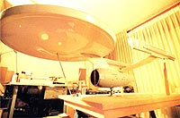
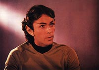
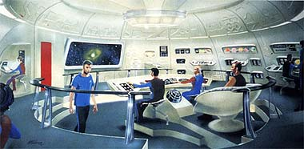

|

|
Em maio de 1975, sete
meses aps o cancelamento da Srie Animada de Jornada
nas Estrelas, Gene Roddenberry comeou a escrever um roteiro
para um filme de cinema de Jornada. O ttulo seria "The
God Thing", e a data de incio das filmagens seria 15 de
julho de 1976 (depois alterado para janeiro de 1977). O oramento
seria de US$ 5 milhes. Era a Paramount preparando o retorno de
um dos programas mais cultuados de todos os tempos, e tudo o que o
estdio precisava era de uma histria.   Com o filme comeando a adquirir vida, a Paramount no conseguiu um acordo para William Shatner voltar a interpretar James Kirk. As primeiras verses do roteiro de "Planeta de Tits" passaram a contar com a ausncia de Kirk. Com a dificuldade apresentada, a Paramount aceitou a proposta de Shatner e o capito finalmente passou a fazer parte do projeto. A trama de "Planeta dos Tits": a Federao e os Klingons esto em disputa por um misterioso planeta que pode ser o lar dos Tits, uma raa que todos acreditam ser apenas uma lenda. Durante o conflito Klingon/Federao, o planeta sugado por uma "fenda espacial". A Enterprise vai atrs do planeta, e emerge na rbita da Terra, porm na pr-histria. A tripulao acaba dando uma de "monolito negro de 2001", mudando a histria da Terra graas sua interao com os humanides pr-histricos que l estavam (cad a primeira diretriz?). No final revelado que a tripulao da Enterprise so na realidade os "Tits", aqueles que aceleraram a evoluo na Terra. Em abril de 1977, a Paramount recusou o roteiro. O diretor Kaufman reuniu-se com os roteiristas e reescreveu a trama, que foi novamente recusada em 8 de maio de 1977, enterrando de vez o projeto de filme de cinema de Jornada. Neste ponto, a oramento estava em US$ 10 milhes e pr-produo j havia comeado. A Paramount negou-se a dar maiores explicaes, mas sabe-se que a estria de "Star Wars" desmotivou os executivos de estdio. Enquanto Jornada baseava-se em uma srie que aos poucos foi conquistando seu espao, "Star Wars" havia chegado do nada e mudado tudo. Era difcil competir. Logo, com a pr-produo pronta porm sem uma bom roteiro, para no ter prejuzo, a Paramount decidiu cancelar o projeto. Mas o estdio sabia o que tinha em mos: uma srie conhecida e amada por muitos, de valor comercial muito grande. Jornada poderia no estrear na telona, mas voltar para a telinha. A srie que nunca houve O anncio oficial foi feito em 10 de Junho de 1977. A Paramount chamou a imprensa e comunicou: iria lanar a quarta rede de televiso americana de mbito nacional (as trs redes at ento eram a NBC, CBS e ABC) e a ncora de sua programao seria uma nova srie de Jornada nas Estrelas, de nome "Jornada nas Estrelas - Fase II" ("Star Trek - Phase II"). O episdio-piloto de duas horas de durao seria exibido em fevereiro de 1978, e os episdios seriam semanais. A reao de Hollywood foi de curiosidade, j que um estdio ter sua prpria rede de televiso fazia sentido, mas tentar encarar as trs grandes NBC, CBS e ABC era loucura. Gene Roddenberry estava radiante. Aps cinco anos de promessas e decepes, Jornada voltaria! O produtor seria Robert H. Goodwin, que no incio foi um pouco relutante em aceitar o cargo, j que no estava familiarizado com o mundo de Jornada. Por outro lado, Matt Jefferies, o diretor de arte da Srie Clssica, estava de volta.  Ainda no havia nenhum roteiro para o episdio-piloto, mas Gene no abria mo de utilizar elementos de "The God Thing". Sobre a Enterprise, Roddenberry pediu que Jefferies apenas atualizasse a nave, e no a mudasse complemente, como Ralph McQuarrie props.  Uma das diferenas entre a srie original e a Fase II estava na melhoria das condies de trabalho. Para se ter uma idia, a Enterprise da Srie Clssica foi construda com uma variedade de materiais (madeira, alumnio), e a nova nave seria construda apenas com fibra de vidro, seria maior, mais detalhada e muito mais fcil de se trabalhar.Enquanto isso Gene corria atrs de pessoal para produo e dos atores. Com a certeza de que haveria alm do piloto pelo menos 13 episdios confirmados, que ator diria no a oportunidade de voltar ao cenrio da TV? Bem, Leonard Nimoy (Spock) o fez, j que seu relacionamento com Roddenberry nunca foi dos melhores. Gene chegou a propor que Nimoy trabalhasse apenas no episdio-piloto e em onze episdio dos treze j confirmados, com dois episdios de folga. Nimoy no aceitou. Trabalhar em Jornada no fazia mais partes dos planos. Jornada nas Estrelas retornaria, mas sem seu principal personagem.  Para suprir a ausncia de Spock, Gene criou um personagem: Xon (pronuncia-se "Zahn"), um jovem Vulcano oficial de cincias. Roddenberry aproveitou o embalo e resolveu introduzir mais um personagem, desta vez graas a William Shatner. O salrio de Shatner para o episdio-piloto e para os treze episdios seguintes era muito alto, e, dependendo da receptividade financeira que a Fase II tivesse, talvez Kirk fosse relegado a aparecer apenas em alguns episdio como convidado especial, ou quem sabe, se as coisas ficassem difceis, at poderia ser morto. Para substitu-lo se fosse necessrio, foi criado o comandante Willard Decker, que, por enquanto, seria o primeiro-oficial de Kirk.Um ms aps a conferncia de imprensa onde a Paramount anunciou a Fase II de Jornada, a pr-produo da srie comearia. William Ware Theiss, o criador dos uniformes da Srie Clssica, j estava criando novos uniformes e a equipe de produo j tinha praticamente prontos novos feisers de alumnio, com o mesmo desenho das antigas armas da Srie Clssica, porm mais bonitos e detalhados. A "bblia" da srie estava pronta, e as instrues para os roteiristas dos novos episdios eram as seguintes:  A Nave Com suas modificaes e atualizaes, a USS Enterprise a maior e mais moderna nave da Frota Estelar. Sua tripulao ser de 430 pessoas, metade sendo do sexo feminino. Armamento O poder de fogo da Enterprise continua sendo os bancos de feisers, porm os novos feisers so mais poderosos do que na srie original. Os disparos agora so emitidos atravs de uma estrutura principal na nave, e no na parte superior da seo disco. Equipamentos O comunicador pessoal foi atualizado e tem mais funes agora. Pode ser anexado ao tricorder para transmitir informaes diretamente do planeta para os computadores da Enterprise. A tela principal na ponte de comando no tem mais o aspecto de uma enorme televiso, pois agora ela oval e hologrfica. Outras mudanas No geral, a atmosfera a bordo da Enterprise ser mais confortvel do que antes, afinal, a nave o lar de 400 pessoas. Haver mais plantas exticas de outros planetas, e as vestimentas no sero restritas apenas aos uniformes de servio. Agora os esforos eram para criar o roteiro do episdio-piloto, que seria intitulado "In Thy Image". Mas as coisas ainda mudariam muito para Gene & cia. nos prximos meses daquele ano de 1977. A seguir: Um
piloto para a srie |